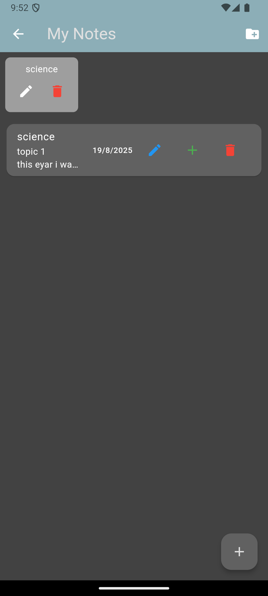
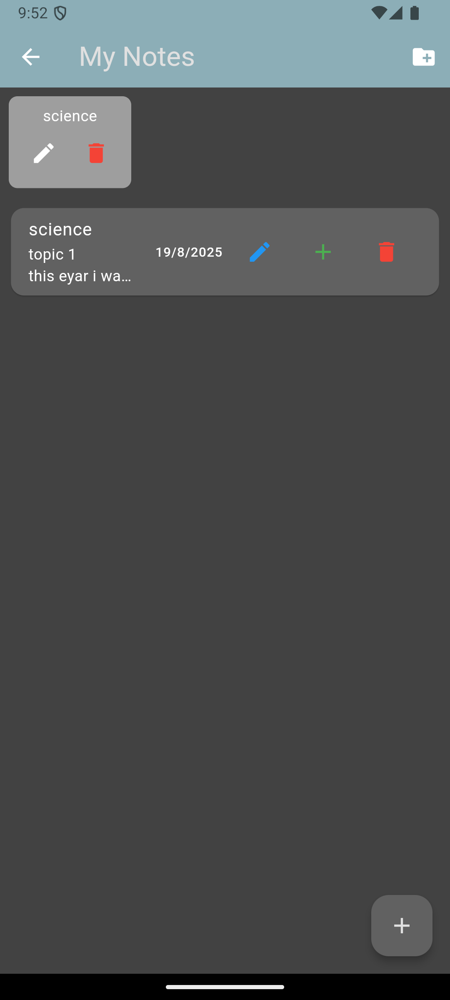

Problem
Students juggle tasks and distractions; existing tools are fragmented and don’t align with real study routines.
I built the study timer and the Add Note page (rich-text) in this team app.
Grade: A- Flutter Dart Firebase Android
 


Students juggle tasks and distractions; existing tools are fragmented and don’t align with real study routines.
One app combining Pomodoro-style timing, rich-text notes (with images), and weekly insights to guide habits and reduce distraction.
Flutter, Dart, Firebase (Auth/Firestore/Storage), GitHub Actions (CI), Figma. Agile sprints with Git-based version control.
Balancing scope vs. timeline; handling background app state reliably; designing a clean note-taking UX that stays simple.